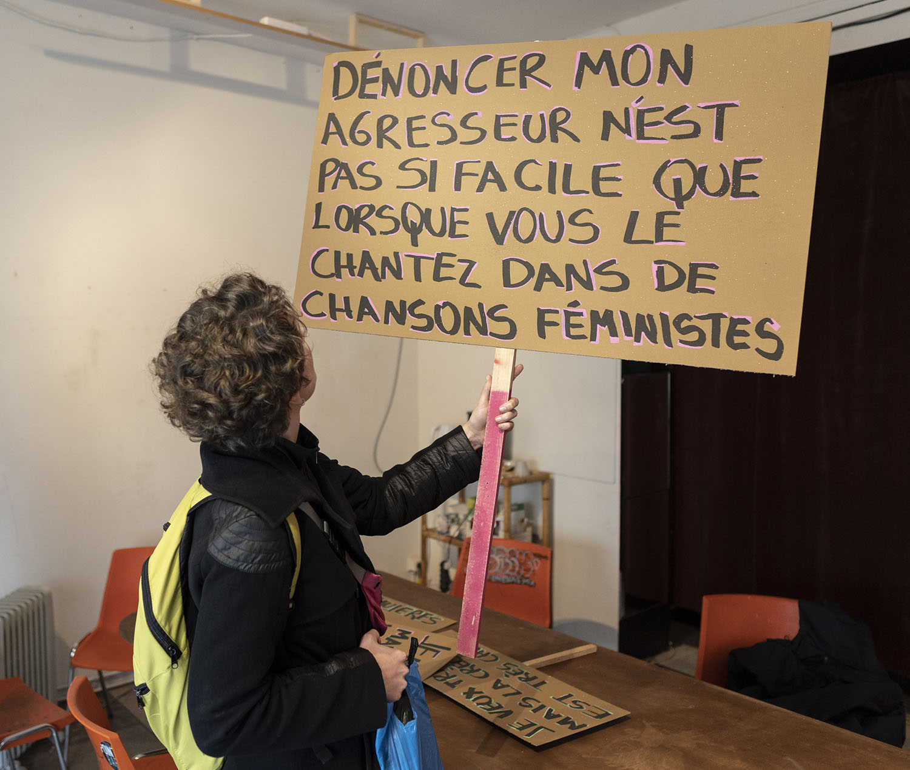

Expo / Artist talk
vendredi (Friday) 20 mars, 2020, 18h-22h
Residence of Reflection project by Belén Charpentier

Pliez cette communauté propose différents exercices sur la façon de plier les modes néolibéraux établis dans lesquels nous vivons ensemble, étudie les langues, les manifestations et les féminismes, et dérive dans deux projets contextuels.
Il n’y a pas de désir que je ne fasse mien, apporte à la Marche Mondiale des Femmes les désirs et les demandes des femmes qui ne pouvaient pas y assister à la Marche, soulignant la pratique féministe de soulever les luttes des autres femmes.
Le désir de changer le nom de toutes choses, s'interroge sur le discours dans un pays où le choix de la langue est politique.
Au cours de ce processus, l'utilisation symbolique de dispositifs tels que des affiches politiques et des dictionnaires a déclenché des interactions sociales. Le projet a l'intention que de futures actions potentielles puissent émerger en utilisant les mêmes outils, dans le but de rendre autonomes les communautés avec leurs propres compétences sociales.
Belén Charpentier est une artiste et chercheuse basée à Buenos Aires, Argentine.
belencharpentier.com
Bend that commonality proposes different exercises to bend the established neoliberal ways in which we live together, researches on languages, manifestations, and feminisms, and derived in two contextual projects:
There's no desire I don't make my own, takes to the Marche Mondiale des Femmes the desires and demands of women who could not attend to the Marche, pointing out the feminist practice of raising other women’s struggles.
The desire to change the name of all things, researches on speech in a country where the choice of language is political.
During this process, the symbolic use of devices such as political posters and dictionaries triggered social interactions. The project intends that future potential actions can emerge using the same tools, aiming to empower communities with their own social skills.
Belén Charpentier is an artist and researcher based in Buenos Aires, Argentina.
belencharpentier.com